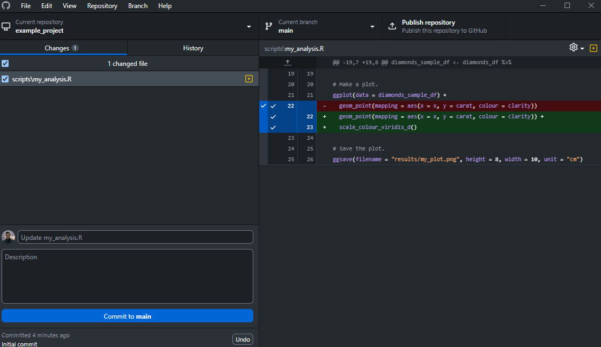
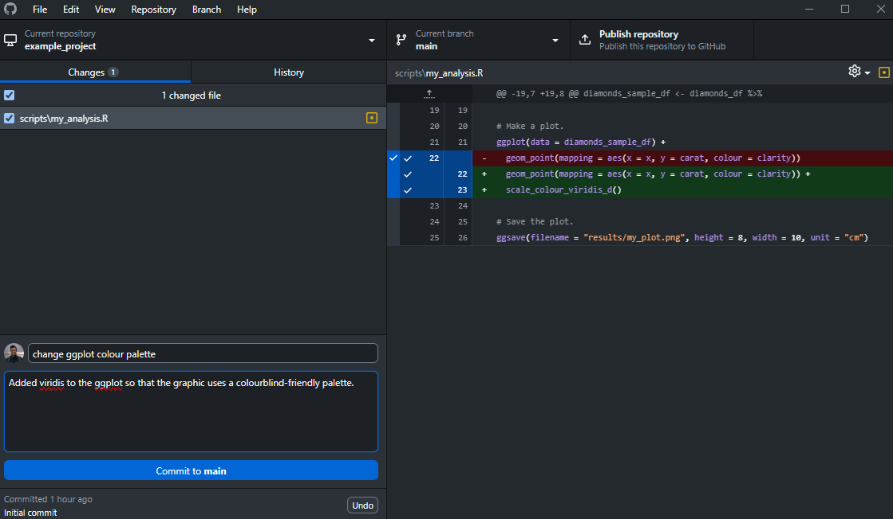

GitHub Desktop: Power Hour
Research Data Management, Amsterdam UMC
1 Preamble
This material is a pilot workshop introducing GitHub Desktop for researchers at Amsterdam UMC. It is partly based on material produced by TIB Hannover. The workshop is a compact, essentials-only session designed for students or researchers with zero familiarity with git/GitHub, but some familiarity with R.
2 Version control
In this workshop you will be learning how to use GitHub Desktop. This is a point-and-click application that will allow you to use version control. Version control is a way of managing changes to code, in our case, R code. Once you’ve mastered the basics of version control using GitHub Desktop, you will be better able to track changes to your own code, revert to old versions of your scripts, collaborate with others, and avoid the worry of losing your work. At the very least, by the end of this session, you will never again have to use the classic (but deeply shameful) academic file naming system for your R scripts.

Rather than getting lost in a sea of nearly-identical files with different names (or even worse, only retaining the latest version) we can use version control. Version control tools start with a base version of a file – in this case, an R script – and then record any changes you make to the script as you go along. This could be deleting old code, editing existing code, or writing new code. At any point, you can revert to an old version or compare two different versions to assess what the differences are between these ‘snapshots’ of the same R script. In Git terminology, these snapshots are called commits.

Two (or more) collaborators can also independently make different changes to the same R script without worrying about overwriting what one another are doing. Along the way, each change to the script can be given a short description (e.g., “Recode age variable”) that helps you differentiate between different snapshots (i.e., commits)

And then later on, the two different versions can be merged into the same base R script.

Used properly, it is impossible to permanently lose work with version control. You will never have to frantically search through Outlook for an R script that you emailed to yourself, or frantically try and ‘restore previous version’ within Windows. Version control takes care of this for you!
Self-questions
Imagine you have 5 co-authors on a paper. How would you manage the changes and comments they make to your paper? If you use Microsoft Word, what happens if you accept changes made using the Track Changes option? Do you have a history of those changes?
Imagine you want to collaborate on an R script with a colleague. How would you go about this? Email the script back and forth with your changes? Share the script on a Cloud platform (e.g., One Drive, Google Drive)? If one of you made a mistake, deleting some important code, could you easily identify the change and remedy it?
3 Why GitHub Desktop?
So, we will be learning GitHub Desktop for version control. You might have heard various terms being thrown around with respect to version control, almost all of which will include the word ‘git’. Let’s clarify this. Git is the software doing the hard work: this is the thing that’s tracking changes to your R code. If you really want to, you can download Git, go away and use version control without any further tools.
Here, we recommend using Git via GitHub Desktop. There are two main reasons to this. First, using GitHub Desktop is one of the easiest and most accessible ways to use Git for version control. It does not require any usage of the command line and it has a pretty good point-and-click user interface. Second, GitHub Desktop – as the name implies – works seamlessly with github.com, the largest online platform in the world for sharing and storing code. By using GitHub Desktop, you can not only put your code under version control with minimal effort, but you can also easily share your code with the world and remotely collaborate with your colleagues. Even if you work alone, and you do not want to share your code with anyone, github.com can still be used to store your code privately, ensuring that all your versions are backed-up.
There are alternatives available, many of which also use Git under the hood, but GitHub has some advantages that means it will likely soon become the standard version control tool at Amsterdam UMC (Pronk & Geertsma, 2024).
4 Solo exercise
4.1 Setup
If you haven’t already:
- Sign-up to GitHub.
- Download GitHub Desktop.
- Sign-in to your GitHub account within GitHub Desktop.
- Download the example R project that we will work with. Unzip it and place the folder somewhere on your local machine.
4.2 Adding a project to GitHub Desktop
In this exercise we assume that you have a small, pre-existing project for which you want to introduce version control. You can (and should) of course use version control from the very beginning of each project. For now, we use the example project above. Once saved and unzipped, it should look something like the screenshot below.
Currently, nothing we are doing is under version control. No changes are being tracked. If we delete some R code, it’s probably gone forever, and we cannot easily compare or restore to a previous version. To begin tracking the project using Git, we can add it to GitHub Desktop using File / New repository. A repository is the term for the digital storage space on GitHub that includes your code, data, and documentation. So, typically the repository consists of the folder on your computer containing all your research materials. It’s the folder than we want to put under version control.
You will then be prompted to complete some information about the repository. Because we already have a pre-existing folder, the name of the repository is the name of the folder i.e., example_project. You can add a short description if you’d like. The Local path points GitHub Desktop towards the location of example_project (in our case, within the training folder). We tick the box for a README, which is where we write the documentation for the project, and then select R for the Git ignore. We will cover these two things later! In the example below, we do not select a licence, but by all means select one if you’d like.
Then click Create repository. You will then get something like the screenshot below. Your project is now under version control and has been added to GitHub Desktop!
4.3 Editing a script
How can we tell that we are now using Git for version control? One easy way to check is just to make an edit to your R script. Open up the R project and the my_analysis.R script in RStudio. If needed, install the packages required to run the script. You don’t actually have to understand or even run the script to follow the exercise, but it will allow you to test things out more if you can get it running.
Now, make an edit to the R script. This could be a meaningful edit to the code or something trivial like a comment saying “Hello”. In my example, I just add some code to change the colour scheme used in the ggplot. What happens in GitHub Desktop? You will see some colourful annotation of your change on the right, and a summary of the files changed (in this case, just my_analysis.R) on the left.

4.4 Making a commit
While we can see that Git is tracking these changes, we have not yet taken a ‘snapshot’ of what we’ve done. To do that, we need to make a commit. You will notice that once a change is made, the option for making a commit appears in the bottom left, including a pre-filled description of our change (“Update my_analysis.R”). You can write your own description. And the click commit to main.

Once you’ve done that, it’s a bit of a let down. Nothing really appears to happen. But, when you click on History in the top left, you can see your commit history. You will notice that by default, we made an Initial commit when creating the repository. So you should now have two. Try making some changes, making a commit after each one, and then looking at the History tab. You can edit the code, save a new plot and/or save new data. An example of my commit history is below.
You can go away and use GitHub Desktop on your own just like this. After each major change to your script, you can make a commit and keep working in the same script safe in the knowledge that you can go back and retrieve old code whenever you want. You do not even need access to the internet to do this. But, one major advantage of GitHub Desktop comes from pushing stuff to GitHub.
4.5 Pushing your changes
Back on the Changes tab, you will notice a prompt about publishing your repository. As the message says, your repository and all its commits only exist on your local machine. To make it available on github.com we need to publish it. Click on Publish repository. You will notice that now we have the option to make the code private. Untick this box (so it’s public) and then click Publish repository again.
In Git terminology, you are now pushing your (local) commits to the remote repository (i.e, the repository on github.com). This push is unique because it’s our first one, so the push is combined with publishing the repository online (it did not exist online before). If you click View on GitHub (in the right panel) you will taken to this remote repository. It now exists online!
You will notice that the remote repository contains everything you’ve done, including the commit history. All your previous snapshots have been stored, backed-up online, and are now available to others.
Note that now, your remote repository (i.e., the one on github.com) mimics our local repository (i.e., the one on your laptop). That’s because we commit + pushed all our changes to the remote. But what happens if we or someone else changes something on the remote repository? How can we update our local repository with those changes? We will practice playing with that now by using the README file.
4.6 Pulling changes to the README
You might remember that when we created the repository, we created a README file. This is a very important file: it can be used to document your repository, both for your (future) self and for others that might want to use your code. The file is called README.md in your repository. The contents of that file is rendered and displayed on the main landing page of your repository. If you want, you can edit this file within something like notepad, commit the change, and push your changes to the remote repository, and in doing so the description on the public repository online will change.
Here, we want to practice a pull. This is the opposite of a push. Instead of pushing changes from our local machine to the remote repository on github.com) we can pull changes that exist on the remote but not on our local machine. To practice this, we are going to edit our README on the remote repository, and then pull those changes so that we have them no our local machine. Click on the edit button of the README.
Make some changes to the file. Note that it uses markdown syntax, although you don’t need to know markdown to make an edit. Add some details to your README and then click Commit changes (in green). When you make changes directly to the remote, you don’t need to push anything. The commit on its own is enough to change the contents of the remote repository.
Now, how can we update our local repository with these changes? We can check for changes on the remote by clicking Fetch origin within GitHub Desktop.
We will then be notified that there’s been a change on the remote (i.e., our edit to the README). We will then be prompted to pull from the remote. Click this now!
If you now check your README.md on your local repository, you should now see any changes that were made on the remote repository. You will also notice that your History tab has been updated with the commit we made directly to the remote.
In practice, most things that we pull from the remote repository are changes that someone else has made to the remote, such as adding some new code to our script. If Person A pushes some new code to the remote repository, then Person B can then pull their changes to their local machine, for further edits or testing. We cover this during an exercise later.
Self-study
Now you’ve successfully pulled changes to the README from the remote, have a go at doing it the other way around. Open up README.md in a text editor (e.g., notepad), make some changes, and then commit and push those changes to the remote.
5 Collaboration exercise
Now you’ve practiced some stuff on your own, we can extend the exercise to simulate a collaboration with a research colleague. To do this, you will need a colleague! If you can’t find a friendly colleague to practice this exercise with, you can submit a ticket via ServiceNow for Research Software Management help, and we will schedule an appointment to help you.
Let’s say you have a colleague that’s really good at making fancy looking ggplots. You want them to contribute to the script on your repository. A straightforward way of doing this is to add them as a collaborator. On the repository webpage, click on Settings and then Collaborators. After going through the two-factor check, click Add people and then search for your colleague’s username. Here, I choose my esteemed colleague Thomas Pronk and click Add tpronk to this repository. Obviously, please choose your colleague’s username!
Your colleague will now get an invite to be a collaborator, which we hope they will enthusiastically accept. Once they do, your colleague will need to clone your remote repository onto their local machine. You can do this by clicking File / Clone repository.
Then copy the URL of the remote repository into the box, as shown below. Remember that this is my URL – use your own! Your colleague can then choose where they want the repository to live on their machine, and then click Clone.
To be continued…
6 Git ignore
A brief explanation of the git ignore file here.